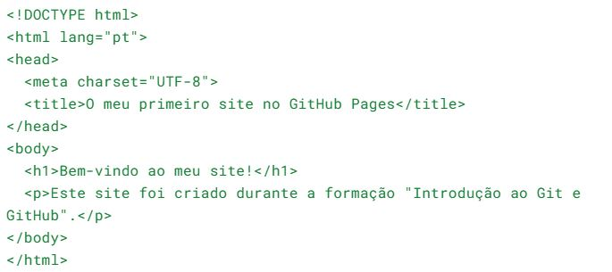

Etapa 3 - Criar o ficheiro do Sítio
Na pasta local do repositório, cria um novo ficheiro com o nome:
index.html
- Abre-o com o Notepad++.
- Copia este conteúdo:

- Guarda o ficheiro e volta ao GitHub Desktop.
Etapa 4 - Fazer o 1º Commit e Push
- No GitHub Desktop, verifica que o ficheiro index.html aparece na lista de alterações.
- Escreve uma mensagem de commit, por exemplo:
Adicionado ficheiro index.html
- Clica em Commit to main.
- Depois, clica em Push origin para enviar as alterações para o GitHub.